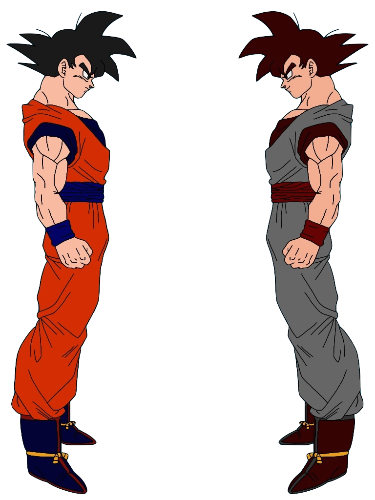
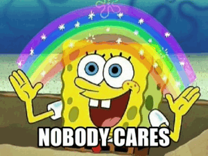
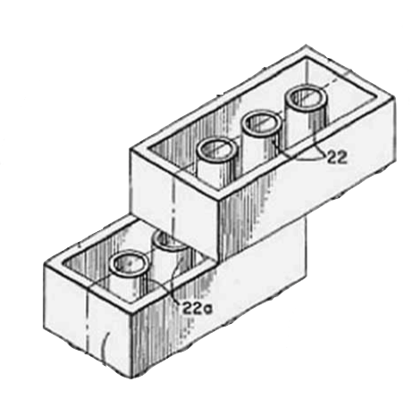

Science X Python
What labs can learn from the python community
 |
What is open science?
Open Science methodology
emphasizes:
- transparency
- reuse
- reproducibility
- collaboration
The state of
scientific computing
- minimal code reuse
- virtually no training
- no credit for sw contributions
- minimal discussion of sw in papers & conferences
...and then 'big data' happened
- Astronomy, genomics & collider physics approaching petabyte scale
- Ecological modeling
- Social Sciences --> Digital Humanities
- ...just to name a few.
Enter the Scientific Software Developer
Two Possible Futures
Support Collaborative Coding
Work together or else
with our colleagues
for them
Our code needs to emphasize:
- Simplicity
- Explicitness
- Readability
PEP 20
Writing for Reuse
Avoiding Peak Spaghetti
Reusable engineering
Python normalizes modularity
Python is aggressively modular
PyPI is friendly
Code Exchange
- Make it familiar
- Make it natural
- Make it friendly
Discoverability
Scientific communication is too formal
Pythonistas are loud
- Python meetups start daily (at least)
- Someone blogs about Python every 3 seconds (feels like)
Pycon
- talks span crunchy to cultural
- talks at all technical levels encouraged
- diversity & ethics explicitly called out
Capacity Building
Education is Complicated
- Rampant gender bias
- Undergrad classes: no room in curriculum
- Online resources don't provide (good) feedback
- Workshops don't scaffold long-term practice
Pyladies is awesome
- diversity first
- peer driven / minimal power hierarchy
- skills focused
- pedagogically smart
Mozilla Study Groups
TL;DR
building a community
diverse
building a community
diverse, legible
building a community
diverse, legible, practical
building a community
diverse, legible, practical, accessible
building a community
diverse, legible, practical, accessible & open
Science x Python
@billdoesphysics
 |